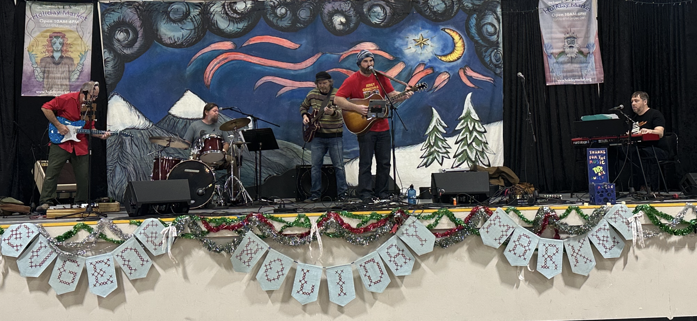
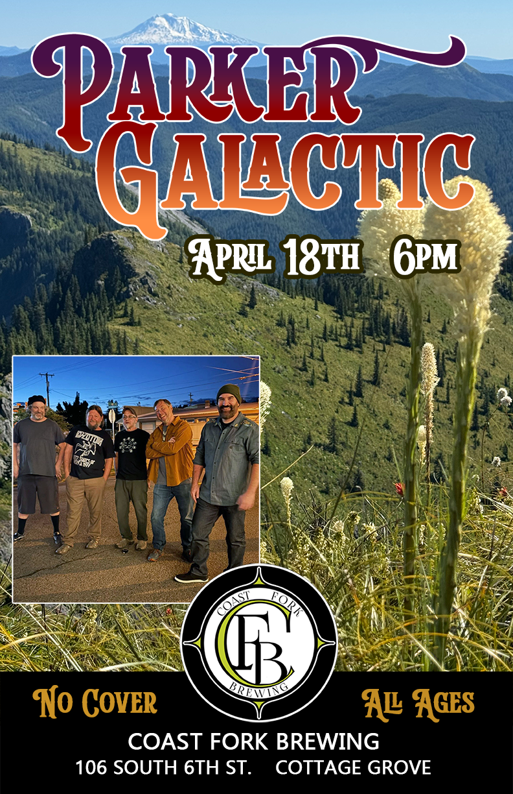

Cosmic American Folk-Rock in the Pacific Northwest
Parker Galactic channels the spirit of the Pacific Northwest with a sound that rolls like a river and peaks like golden hour over the Cascades. Blending country, blues, jam, and folk-rock, their music feels both earthy and cosmic — like a backwoods jam wrapped in starlight. Parker Galactic tells the stories of drifters, lovers, wild places, and wide open spaces.
Parker Galactic is: Ed Parker (guitar, vocals), Anthony Forcellini (guitar, lap steel, vocals), Ryan Galas (bass), Josh Manders (keys, vocals), and Mike Clark (drums, vocals).


Parker Galactic performing at the 2025 Eugene Holiday MarketUpcoming Shows

Saturday, April 18, 2026 at 6pm
Coast Fork Brewing
106 South 6th Street, Cottage Grove, OR